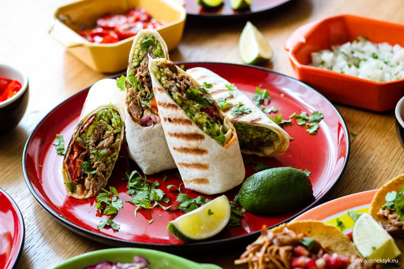

Składniki burrito z szarpaną wieprzowiną:
- tortilla pszenna – duża
- mięso wieprzowe
- arroz verde
- guacamole
- pomidorki konfitowane
- cebulka marynowana w cytrusach i habanero
- świeża kolendra

Jak przygotować burrito z szarpaną łopatką wieprzową?
Przygotowanie burrito rozpoczynamy od przygotowania mięsa, to ono wymaga najwięcej czasu i cierpliwości.
Mięso dusi się w piecu przez 4 godziny, tak więc warto zadbać o nie wcześniej.
Można je również przygotować np. dzień wcześniej, a przed składaniem burrito, mięso podgrzać na patelni.
Tajemnica naszego burrito tkwi jednak w dwóch składnikach... nie tylko w cudownie soczystym i miękkim mięsie wieprzowym,
ale także w genialnie aromatycznym ryżu po meksykańsku, czyli arroz verde. Jest niezwykle aromatyczny, a to za sprawą świeżej kolendry i pietruszki. Przygotowanie zajmuje naprawdę niewiele czasu.
Do burrito użyliśmy również świetnych pomidorków konfitowanych,
które można przygotować w czasie duszenia się mięsa w piekarniku.
Pomidorki konfitowane nadają daniu niesłychaną świeżość i delikatność.
No i ostatnia rzecz, którą warto zrobić odrobinę wcześniej. To czerwona cebula marynowana w cytrusach i papryczce habanero. Niesłychana dawka orzeźwienia, pomieszana z lekką nutą pikanterii.
Jak już skompletujecie wszystkie rzeczy, przychodzi czas na montowanie wszystkiego w jedną całość. Na początek na placku tortilli rozkładamy łyżką odrobinę zielonego ryżu, obok ryżu lub na nim (to już według uznania) kładziemy szarpaną wieprzowinę, następnie trochę czerwonej cebulki, guacamole i kilka konfitowanych pomidorków. Na koniec posypujemy odrobiną poszatkowanej świeżej kolendry i zwijamy dość ciasno placek tortilli.
Źródła